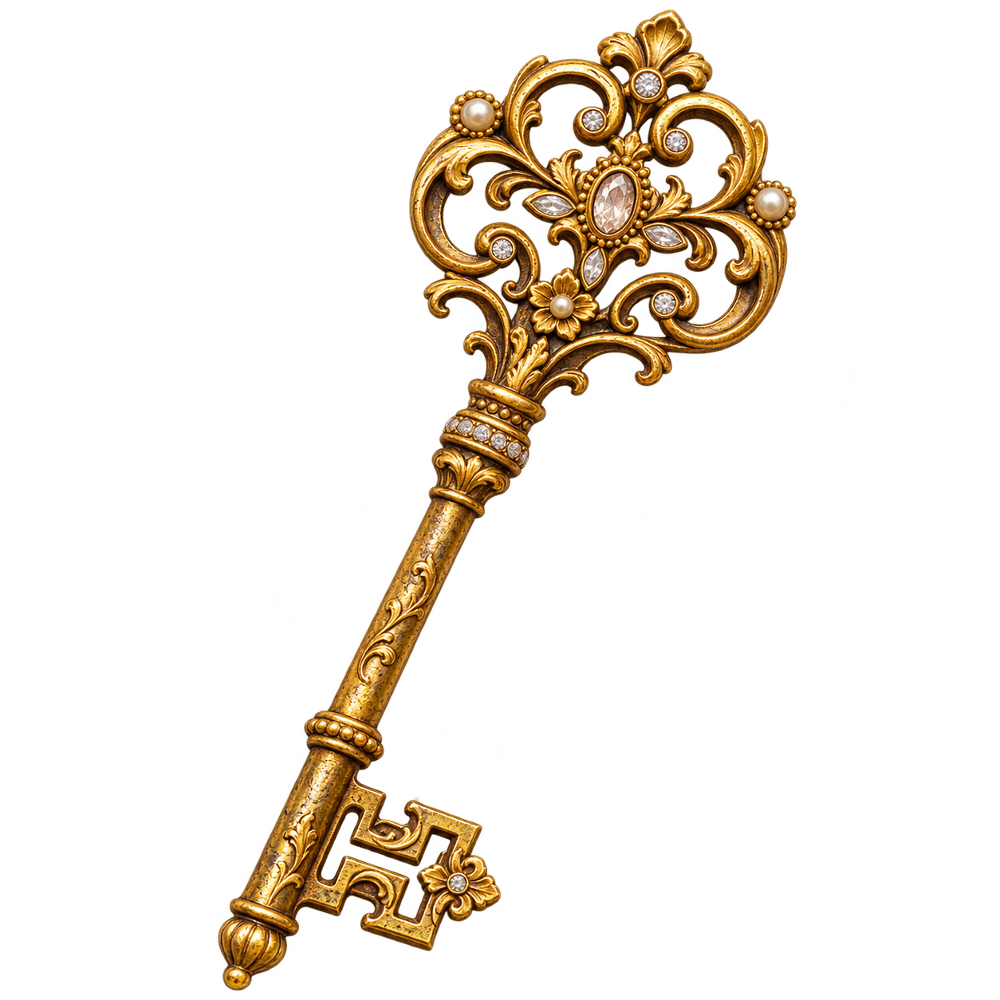

Invitation privée · Notre mariage
Elioth & Dana
Entrez le code indiqué sur votre invitation pour découvrir les informations et répondre au RSVP.
Notre mariage
Elioth & Dana
Dimanche 27 juin 2027
Répondre au RSVPLe grand jour
Une journée à partager avec vous
Nous serions très heureux de vous compter parmi nous pour célébrer notre mariage. Retrouvez ici toutes les informations pratiques et confirmez votre présence.
Dimanche 27 juin 2027
Auberge du Pêcheur
Pontstraat 41
9831 Sint-Martens-Latem, Belgique
La cérémonie à la mairie aura lieu séparément le vendredi 25 juin au matin, au Château Malou à Woluwe-Saint-Lambert. L’horaire sera confirmé prochainement.
Dimanche 27 juin
Le déroulé de la journée
Venir au domaine
Informations pratiques
L’Auberge du Pêcheur est située entre Gand, Deinze et Nevele.
Depuis l’E40 : sorties Drongen ou Nevele.
Depuis l’E17 : sorties Deinze ou Nazareth-De Pinte.
Environ 300 km depuis Paris et 75 km depuis Bruxelles, selon l’itinéraire.
Un parking gratuit et des bornes de recharge sont disponibles sur place.
Dormir sur place
Hébergement
Des chambres sont disponibles pour dormir sur place. Certaines chambres ont déjà été réservées pour des invités. D’autres chambres sont encore disponibles. Merci de nous faire savoir si vous souhaitez une chambre avant mi-avril 2027.
Chambre simple : 140 €
Chambre double : 160 €
Brunch du lendemain inclus.
La taxe de séjour de 6,34 € par personne s’ajoute à ce montant.
Auberge du Pêcheur
Pontstraat 41, 9831 Sint-Martens-Latem, Belgique
Découvrir le site de l’Auberge du Pêcheur
Votre réponse
Confirmez votre présence
Une question ?
Contactez Elioth et Dana pour toute question concernant le mariage.